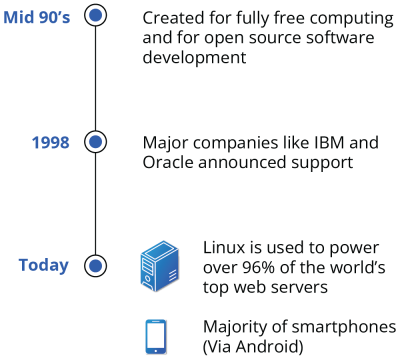
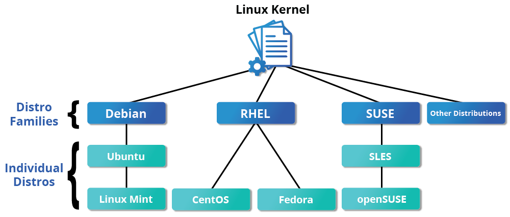

4. I.3 Distributions Linux
4.1 I.3.1 Notion de distribution
Les distributions Linux créées au milieu des années 90 ont posé les bases de l’informatique libre (au sens de la liberté, non du coût nul) et sont devenues un moteur majeur du mouvement du logiciel open source. En 1998, de grandes entreprises comme IBM et Oracle ont annoncé leur soutien à la plateforme Linux et lancé des efforts de développement importants.
Le noyau Linux est le cœur du système d’exploitation. Une distribution Linux complète se compose du noyau plus un ensemble d’outils logiciels pour les opérations sur fichiers, la gestion des utilisateurs et la gestion des paquets logiciels. Chaque outil constitue une partie du système complet. Chaque outil est souvent un projet distinct, avec ses propres développeurs travaillant à perfectionner cette composante.
Alors que le noyau Linux le plus récent (et les versions antérieures) est toujours disponible dans les archives du noyau Linux, les distributions Linux peuvent être basées sur différentes versions du noyau. Par exemple, la très populaire distribution RHEL 8 repose sur le noyau 4.18, qui n’est pas récent mais extrêmement stable, tandis que RHEL 9 utilise la version bien plus récente 5.14. D’autres distributions adoptent plus rapidement les dernières versions du noyau. Il est important de noter que le noyau n’est pas une proposition « tout ou rien ». Par exemple, RHEL/CentOS intègre de nombreuses améliorations récentes du noyau dans leurs versions plus anciennes personnalisées, tout comme Ubuntu, openSUSE, Fedora, etc.
Exemples d’autres outils et composants essentiels fournis par les distributions : les compilateurs C/C++ et Clang, le débogueur gdb, les bibliothèques système essentielles dont les applications ont besoin pour fonctionner, l’interface de bas niveau pour l’affichage graphique, l’environnement de bureau de haut niveau, et le système d’installation/mise à jour des composants y compris le noyau lui-même. Toutes les distributions incluent une suite complète d’applications préinstallées.
Aujourd’hui, Linux alimente plus de la moitié des serveurs Internet, la majorité des smartphones (via Android, construit sur Linux), plus de 90% des charges de travail dans le cloud public, et tous les supercalculateurs les plus puissants du monde.

Les trois grandes familles de distributions Linux les plus utilisées aujourd’hui sont Red hat, Debian et SUSE. Ces familles ne sont pas figées — Linux continue d’évoluer au fur et à mesure que les développeurs identifient de nouveaux besoins et créent des solutions.

4.2 I.3.2 La famille Red Hat
Red Hat Enterprise Linux (RHEL) est à la tête de la famille qui inclut CentOS, CentOS Stream, Fedora et Oracle Linux.
Fedora entretient une relation étroite avec RHEL et contient considérablement plus de logiciels que la version entreprise de Red Hat. Une raison est l’implication d’une communauté diverse dans la construction de Fedora, avec de nombreux contributeurs qui ne travaillent pas pour Red Hat. De plus, Fedora sert de plateforme de test pour les futures versions de RHEL.
La version de base de CentOS est pratiquement identique à RHEL, la distribution Linux la plus populaire en entreprise. CentOS Stream reçoit les mises à jour avant RHEL, tandis que CentOS les reçoit après.
4.2.1 I.3.2.1 Caractéristiques de la famille Red Hat
Quelques faits clés sur la famille de distributions Red Hat :
- Fedora sert de plateforme de test en amont pour RHEL.
- CentOS est un clone proche de RHEL ; en fait, CentOS fait partie de Red Hat depuis 2014.
- Elle prend en charge de multiples architectures matérielles.
- Elle utilise dnf, le gestionnaire de paquets basé sur RPM (détaillé plus tard) pour installer, mettre à jour et supprimer les paquets du système.
- RHEL est largement utilisé par les entreprises qui hébergent leurs propres systèmes.
4.3 I.3.3 La famille Debian
La distribution Debian est la base de plusieurs autres distributions, dont Ubuntu. Ubuntu est à son tour à la base de Linux Mint et d’autres distributions. Elle est couramment utilisée sur serveurs et ordinateurs de bureau. Debian est un projet communautaire open source pur (non détenu par une entreprise) avec un fort accent sur la stabilité.
Debian fournit de loin le plus grand et le plus complet dépôt de logiciels parmi toutes les distributions Linux.
Ubuntu vise à offrir un bon compromis entre stabilité à long terme et facilité d’utilisation. Puisque Ubuntu tire la plupart de ses paquets de la branche stable de Debian, il bénéficie également d’un dépôt logiciel très large.
4.3.1 I.3.3.1 Faits clés sur la famille Debian
Quelques faits clés sur la famille Debian :
- La famille Debian est la base d’Ubuntu, et Ubuntu est la base de Linux Mint et d’autres.
- Debian utilise le gestionnaire de paquets APT basé sur DPKG (apt, apt-get, apt-cache, etc.) pour installer, mettre à jour et supprimer les paquets.
- Ubuntu est largement utilisé pour les déploiements cloud.
Bien qu’Ubuntu soit construit sur Debian et utilise GNOME en interne, son interface visuelle diffère de celle de Debian standard et d’autres distributions.
4.4 I.3.4 Services associés aux distributions
La grande variété de distributions Linux est conçue pour répondre aux besoins et goûts spécifiques de différents publics et organisations. Cependant, les grandes organisations (entreprises, institutions gouvernementales, etc.) tendent à choisir les principales distributions supportées commercialement par Red Hat, SUSE et Canonical (Ubuntu).
CentOS et CentOS Stream sont des alternatives gratuites (sans coût) populaires à Red Hat Enterprise Linux (RHEL), souvent utilisées par des organisations autonomes n'ayant pas besoin de contrat d'assistance commerciale (pas besoin desupport technique payant). Notez que les nouvelles versions de CentOS ont disparu fin 2021 au profit de CentOS Stream. Cependant, au moins deux nouveaux substituts dérivés de RHEL, Alma Linux et Rocky Linux se sont solidement imposés comme des alternatives pérennes.
Les variantes RHEL comme CentOS et AlmaLinux sont conçues pour assurer une compatibilité binaire intégrale (binary-compatible) avec RHEL, c’est-à-dire que dans la plupart des cas, les paquets logiciels binaires s’installent correctement entre distributions.
Ubuntu et Fedora sont largement utilisés par les développeurs et populaires dans le domaine éducatif. De nombreux distributeurs commerciaux, dont Red Hat, Ubuntu, SUSE et Oracle, proposent un support payant à long terme pour leurs distributions, ainsi que la certification matériel/logiciel.
Tous les grands distributeurs fournissent des services de mise à jour avec les derniers correctifs de sécurité, les résolutions de bugs et les optimisations de performances, ainsi que des ressources de support en ligne.